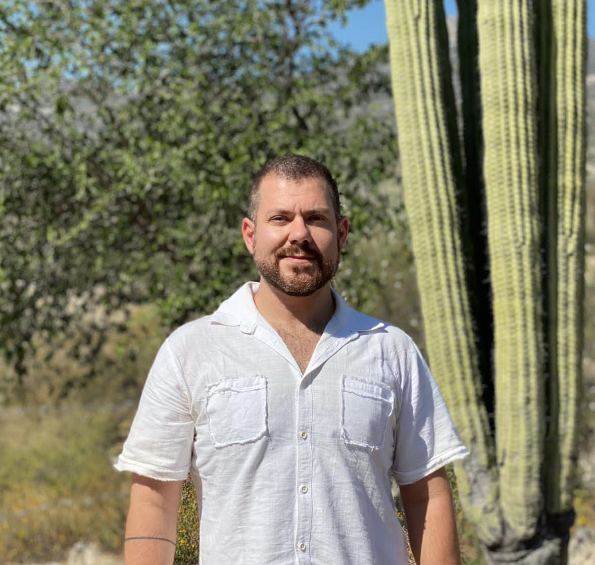

Marcelo Rodrigo Pace
Professor Titular · Universidad Nacional Autónoma de México (UNAM)
Ciudad de México, México
- Evolução anatômica
- Ontogenia vegetal
- Anatomia de lianas
- Diversidade anatômica em galhas
- Filogenética
- Anatomia comparada
Sobre
Sua pesquisa volta-se à evolução anatômica de plantas, com ênfase em estudos de ontogenia num contexto filogenético para compreender a formação de anatomias complexas — especialmente em linhagens onde ocorreram transições de hábito, como em lianas, e mais recentemente em diversidade anatômica de galhas. Reúne formação e experiência internacional com passagens pelo Laboratório de Anatomia Vegetal da USP, pela Universidade de Helsinki (2010–2011), pela Smithsonian Institution / National Museum of Natural History (2016–2018) e pela UNESP Botucatu (2021–2022), além do Jardim Botânico Nacional do México, onde atua como Diretor do Herbário Nacional (MEXU).
A colaboração com o LIPA nasce de interesses compartilhados no estudo da interface entre anatomia vegetal, interações planta-animal e as estruturas que mediam esses encontros — como as galhas, que combinam respostas anatômicas complexas com interações ecológicas íntimas. Mestre (2009) e Doutor (2015) pela Universidade de São Paulo, ambos sob orientação de Veronica Angyalossy.
